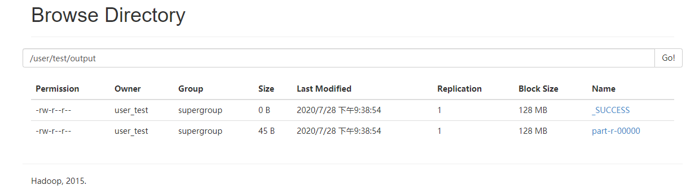
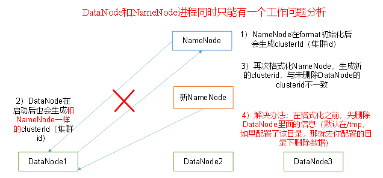

Hadoop伪分布式模式尝试~
Hadoop运行模式
Hadoop运行模式包括：本地模式、伪分布式模式以及完全分布式模式。
Hadoop官方网站：http://hadoop.apache.org/ （其中有两个案列）
伪分布式运行模式
操作
配置集群
启动、测试集群增、删、查
执行WordCount案例
步骤
配置集群
- 配置：hadoop-env.sh（/opt/module/hadoop-2.7.2/etc/hadoop/hadoop-env.sh）
Linux系统中获取JDK的安装路径：
echo $JAVA_HOME
-->
/opt/module/jdk1.8.0_144修改JAVA_HOME 路径：
export JAVA_HOME=/opt/module/jdk1.8.0_144- 配置：core-site.xml（/opt/module/hadoop-2.7.2/etc/hadoop/core-site.xml——文件末尾）
<configuration>
<!-- 指定HDFS中NameNode的地址 -->
<property>
<name>fs.defaultFS</name>
<value>hdfs://hadoop101:9000</value>
</property>
<!-- 指定Hadoop运行时产生文件的存储目录 -->
<property>
<name>hadoop.tmp.dir</name>
<value>/opt/module/hadoop-2.7.2/data/tmp</value>
</property>
</configuration>- 配置：hdfs-site.xml（/opt/module/hadoop-2.7.2/etc/hadoop/hdfs-site.xml——文件末尾）
<!-- 指定HDFS副本的数量 -->
<property>
<name>dfs.replication</name>
<value>1</value>
</property>注：如果只有一台机器，即使备份是3也是备份1份，当集群新增机器时，就会自动添加备份
启动集群
格式化NameNode（第一次启动时格式化，以后就不需要格式化，后期格式化先看进程。先关进程，再删文件）——要先jps查看进程，看下进程关了，再删除data和logs文件（在这个路径下/opt/module/hadoop-2.7.2）
bin/hdfs namenode -format
启动NameNode
sbin/hadoop-daemon.sh start namenode
启动DataNode
sbin/hadoop-daemon.sh start datanode
查看集群
查看是否启动成功
jps（jdk命令，不安装jdk则无法使用）
——> 13586 NameNode13668 DataNode 13786 Jpsweb端查看HDFS文件系统
http://hadoop101:50070 （hadoop101可以换成网址或者在本地hosts中配置一下）查看日志
日志都在logs文件夹下，可以查看。
- 集群操作
（1）在HDFS文件系统上创建一个input文件夹
bin/hdfs dfs -mkdir -p /user/test/input（2）将测试文件内容上传到文件系统上
bin/hdfs dfs -put wcinput/wc.input（3）查看文件
bin/hdfs dfs -ls /user/test/input/
bin/hdfs dfs -cat /user/test/input/wc.input（4）运行MapReduce程序
bin/hadoop jar share/hadoop/mapreduce/hadoop-mapreduce-examples-2.7.2.jar wordcount /user/test/input/ /user/test/output（5）查看输出结果
命令行输出查看：
bin/hdfs dfs -cat /user/test/output/p*浏览器查看（文件可下载查看）：

（6）将测试文件内容下载到本地
hdfs dfs -get /user/test/output/part-r-00000 ./wcoutput/（7）删除输出结果
hdfs dfs -rm -r /user/test/output思考： 为什么不能一直格式化NameNode，格式化NameNode，要注意什么？
cd data/tmp/dfs/name/current/
cat VERSION
——>
clusterID=CID-f0330a58-36fa-4a2a-a65f-2688269b5837
.................................................
cd data/tmp/dfs/data/current/
cat VERSION
——>
clusterID=CID-f0330a58-36fa-4a2a-a65f-2688269b5837可见，其中两个集群id是一样的。格式化NameNode，会产生新的集群id，导致NameNode和DataNode的集群id不一致，集群找不到已往数据。所以，格式NameNode时，一定要先删除data数据和log日志，然后再格式化NameNode。

先关掉进程，再删除文件，再格式化
启动YARN运行MapReduce
操作
- 配置集群在YARN上运行MR
- 启动、测试集群增、删、查
- 在YARN上执行WordCount案例
步骤
- 配置集群
（1）配置yarn-env.sh（/opt/module/hadoop-2.7.2/etc/hadoop/hadoop-env.sh）
配置一下JAVA_HOME（与上面配置 hadoop-env.sh 类似）
export JAVA_HOME=/opt/module/jdk1.8.0_144（2）配置yarn-site.xml（/opt/module/hadoop-2.7.2/etc/hadoop/yarn-site.xml——文件末尾）
<!-- Reducer获取数据的方式 -->
<property>
<name>yarn.nodemanager.aux-services</name>
<value>mapreduce_shuffle</value>
</property>
<!-- 指定YARN的ResourceManager的地址 -->
<property>
<name>yarn.resourcemanager.hostname</name>
<value>hadoop101</value>
</property>（3）配置：mapred-env.sh（/opt/module/hadoop-2.7.2/etc/hadoop/mapred-env.sh）
配置一下JAVA_HOME
export JAVA_HOME=/opt/module/jdk1.8.0_144（4）对 mapred-site.xml.template 重新命名为 mapred-site.xml
mv mapred-site.xml.template mapred-site.xml
vim mapred-site.xml添加以下配置
<!-- 指定MR运行在YARN上 -->
<property>
<name>mapreduce.framework.name</name>
<value>yarn</value>
</property>- 启动集群
（1）启动前必须保证NameNode和DataNode已经启动
（2）启动ResourceManager
sbin/yarn-daemon.sh start resourcemanager（3）启动NodeManager
sbin/yarn-daemon.sh start nodemanager- 配置历史服务器
配置历史服务器，查看程序的历史运行情况。配置步骤：
（1）配置mapred-site.xml
vim mapred-site.xml在该文件里面增加如下配置。
<!-- 历史服务器端地址 -->
<property>
<name>mapreduce.jobhistory.address</name>
<value>hadoop101:10020</value>
</property>
<!-- 历史服务器web端地址 -->
<property>
<name>mapreduce.jobhistory.webapp.address</name>
<value>hadoop101:19888</value>
</property>（2）启动历史服务器
sbin/mr-jobhistory-daemon.sh start historyserver（3）查看历史服务器是否启动
jps（4）查看JobHistory
http://hadoop101:19888/jobhistory
- 配置日志的聚集
日志聚集：应用运行完成以后，将程序运行日志信息上传到HDFS系统上。
好处：可以方便的查看到程序运行详情，方便开发调试。
注：开启日志聚集功能，需要重新启动NodeManager 、ResourceManager和HistoryManager
开启日志聚集功能具体步骤如下：
（1）配置yarn-site.xml
vim yarn-site.xml在该文件里面增加如下配置。
<!-- 日志聚集功能使能 -->
<property>
<name>yarn.log-aggregation-enable</name>
<value>true</value>
</property>
<!-- 日志保留时间设置7天 -->
<property>
<name>yarn.log-aggregation.retain-seconds</name>
<value>604800</value>
</property>其中日志保留七天是按秒来计算的
（2）关闭NodeManager 、ResourceManager和HistoryManager
sbin/yarn-daemon.sh stop resourcemanager
sbin/yarn-daemon.sh stop nodemanager
sbin/mr-jobhistory-daemon.sh stop historyserver（3）启动NodeManager 、ResourceManager和HistoryManager
sbin/yarn-daemon.sh start resourcemanager
sbin/yarn-daemon.sh start nodemanager
sbin/mr-jobhistory-daemon.sh start historyserver（4）删除HDFS上已经存在的输出文件
bin/hdfs dfs -rm -R /user/atguigu/output（5）执行WordCount程序
hadoop jar share/hadoop/mapreduce/hadoop-mapreduce-examples-2.7.2.jar wordcount /user/atguigu/input /user/atguigu/output（6）查看日志，如图2-37，2-38，2-39所示
http://hadoop101:19888/jobhistory 点击ApplicationMaster中的logs
配置文件说明
Hadoop配置文件分两类：默认配置文件和自定义配置文件，只有用户想修改某一默认配置值时，才需要修改自定义配置文件，更改相应属性值。
- 默认配置文件：
| 要获取的默认文件 | 文件存放在Hadoop的jar包中的位置 |
|---|---|
| core-default.xml | hadoop-common-2.7.2.jar/core-default.xml |
| hdfs-default.xml | hadoop-hdfs-2.7.2.jar/hdfs-default.xml |
| yarn-default.xml | hadoop-yarn-common-2.7.2.jar/yarn-default.xml |
| mapred-default.xml | hadoop-mapreduce-client-core-2.7.2.jar/mapred-default.xml |
- 自定义配置文件：core-site.xml、hdfs-site.xml、yarn-site.xml、mapred-site.xml四个配置文件存放在$HADOOP_HOME/etc/hadoop这个路径上，用户可以根据项目需求重新进行修改配置。（优先级高于默认的）
接下来
接下来要做的是，hadoop完全分布式模式环境搭建及运行测试
祝：屁屁入职工作顺利并有所收获，皮皮实习顺利没有bug有所收获~